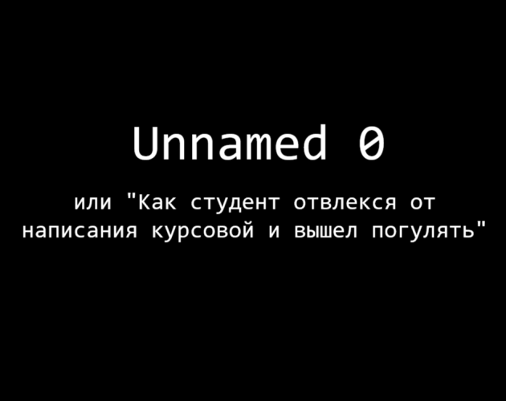

-
Unnamed 0

Студент решил отвлечься от написания курсовой и выйти погулять. Но он еще не подозревал, к чему его это приведет...
-
Описание
Визуальная новелла, которая повествует о студенте, уже неделю пишущем курсовую. Он решил отвлечься от этого и прогуляться. Однако все не так просто, как может показаться: студента уже ждут неприятности.
Сможете ли вы пройти игру на все концовки?Всего в игре 17 концовок. Они делятся на 3 категории в зависимости от исхода для игрока:
- хорошие - персонаж выжил;
- плохие - персонаж умер;
- неопределенные - открытая концовка, допускающая несколько вариантов развития событий.
-
Скриншоты
-
Как запустить
Просто перейдите по ссылке ниже - игра будет открыта в новой вкладке вашего браузера. -
Ссылки
Веб-версия